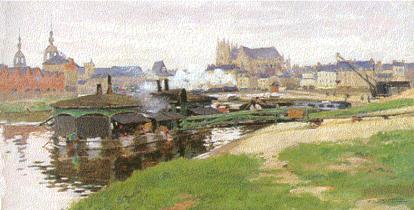
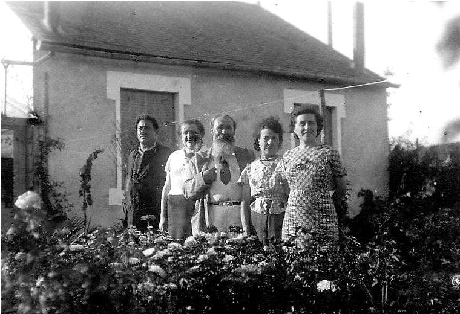

XXI Nantes
Au fond de moi sonne la cloche du passé.
Une odeur d'eau qui dort et de pommes pourries,
Un relent de matin que rien n'a effacé
Allument dans ma nuit leurs feux de pierreries.
La maison, le verger, les sentiers creux, les champs,
Dans l'automne sombrés luisent à fleur de rêve.
Une porte qu'on pousse ouvre un réduit de chants,
Nantes, et ton ciel gris qu'un doigt de soleil crève.
Les brouillards ce matin hèlent d'anciens brouillards.
Aube du souvenir, ma naissance première,
Eveille, par-delà les ans et les hasards,
Ce pays qui attend au fond de ta lumière.
Michel Galiana (c) 1991
XXI Nantes
Deep, o deep in my heart the bells of the past ring.
A smell of still water and of rotten apple,
A foul stench of morning in my innermost being
Light up within my night, like diamonds sparkle.
The house, the green orchard, the hollow paths, the fields
Sunk into time's autumn, gleam on the fringe of dream.
You'll push open a door, caged warbling release,
Nantes, with your dull, grey sky pierced by a bright sunbeam!
Today the morning mist hails mists of yesteryear:
Memory's dawn which is my true birth from the night,
Wakes up, beyond the years, beyond hazard and fear
That land which lies in wait hidden beneath your light!

La maison et les grands-parents (2ème et 3ème à gauche)
Listen to 'Nantes' in English
Transl. Christian Souchon 01.01.2004 (c) (r) All rights reserved